Everything you can do in the CO3 Portal — explained, step by step.
Invite your transport partners, watch shipments move in real time, manage your connected fleet and saved locations, and brand the emails your carriers receive — all from one place. This handbook walks through every screen with annotated visuals.
Quick start
Invite a carrier
Send a branded invitation in under a minute.
Track a shipment
Follow a transport order on a live map.
See your fleet
Inspect any connected vehicle's telemetry.
Brand your emails
Make invitations look like your company.
Manage who sees what
Review every access given and received.
Welcome to the CO3 Customer Portal
The CO3 Customer Portal is your control room for collaborative transport visibility. It connects shippers (companies that send goods) with carriers (companies that move them), so that everyone sees the same trusted picture of where vehicles are and how shipments are progressing — without phone calls or spreadsheets.
Depending on your role you'll use a slightly different mix of features, but the portal works the same way for everyone: a navigation sidebar on the left, your data in the centre, and account controls in the top-right.
Who the portal is for
If you are a shipper
Invite carriers, request consent to see their vehicles, follow your transport orders, and subscribe to permanent monitoring for the trucks that matter most.
If you are a carrier
Accept invitations, decide which vehicles each partner may see, and keep your sharing relationships and consents organised in one tidy list.
Consent-first by design
Nothing is shared without an explicit, auditable consent. You can always see who you have given access to, and who has given access to you.
New here? Read the next two sections — Signing in and Finding your way around — then jump straight to whichever feature you need. Press ⌘K (or Ctrl K) at any time to search this handbook.
Signing in & choosing your company
The portal uses single sign-on. When you open it you are taken to the secure CO3 login screen; after you authenticate you land on your Home dashboard.
- Open the portal. Go to your portal address in the browser. If you are not signed in you'll be redirected to the CO3 login page automatically.
- Enter your credentials. Type your work email and password, then select Log In. Depending on how your organisation set up sign-in, you may also see options such as Sign in with Google.
- Land on Home. You arrive on the Home dashboard for your default company. You'll stay signed in until your session expires or you sign out, so you usually won't need to log in again right away.
Acting for the right company
Many people belong to more than one company (for example a head office and a subsidiary). The Company switcher in the top-left of the header shows which company you are currently acting for. Everything you see — carriers, assets, locations, invitations — belongs to that company.
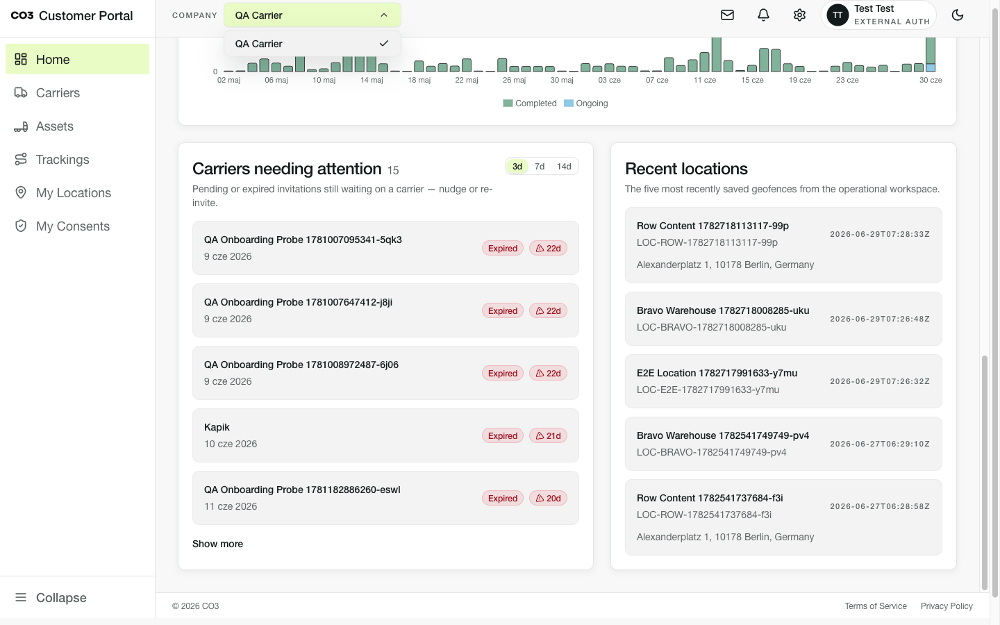
The company switcher opens from the top-left of the header. If you belong to several companies, they all appear here — pick one to switch context.
Switching is instant and safe. When you change companies, every list refreshes to show only that company's data — you'll never accidentally see or act on another company's information.
The Home dashboard
Home is your operational snapshot. At a glance you can see how many partners and vehicles you're connected to, how shipments are trending, and which invitations still need a nudge.
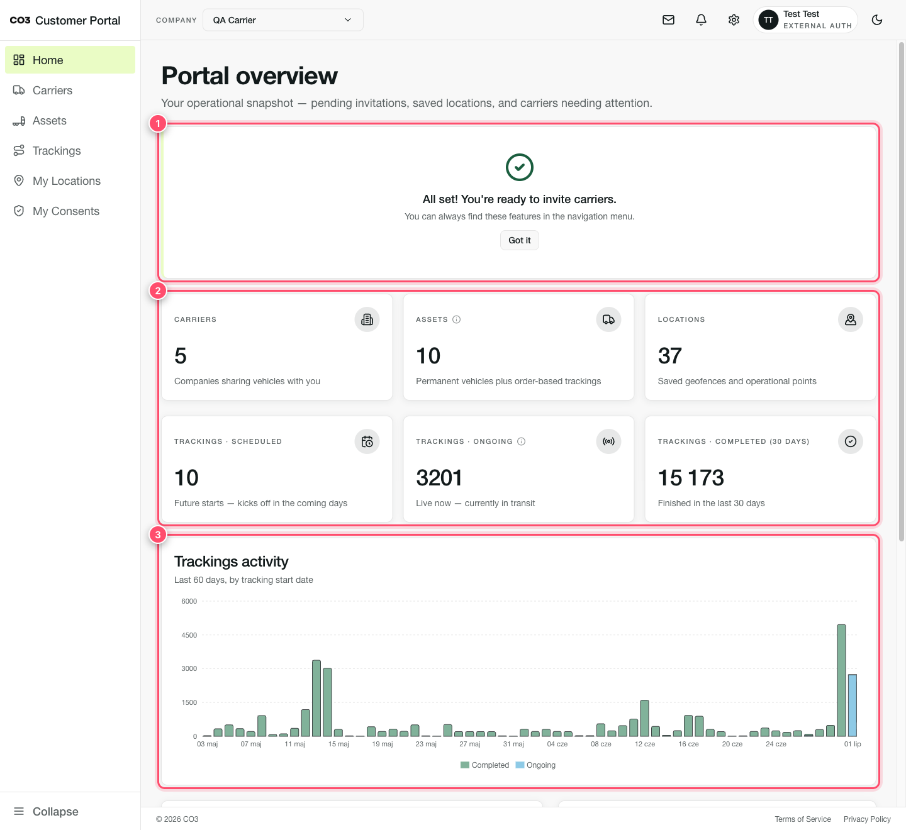
- 1Getting-started panel — a friendly checklist when you're new. Once you're set up it shows “All set!”; dismiss it with Got it.
- 2Snapshot tiles — live counts of Carriers, Assets, Locations and Trackings (scheduled, ongoing, completed). Some tiles have an ⓘ for a quick breakdown.
- 3Trackings activity — a 60-day chart of ongoing vs. completed shipments by start date, so you can spot busy periods.
About the numbers in these screenshots. They come from a demo workspace, so figures like “537 ongoing” are illustrative. Your own portal will show your real partners, vehicles, locations and shipments.
Things that need your attention
Lower on the page, Home surfaces the items most likely to need action so you don't have to go hunting for them.
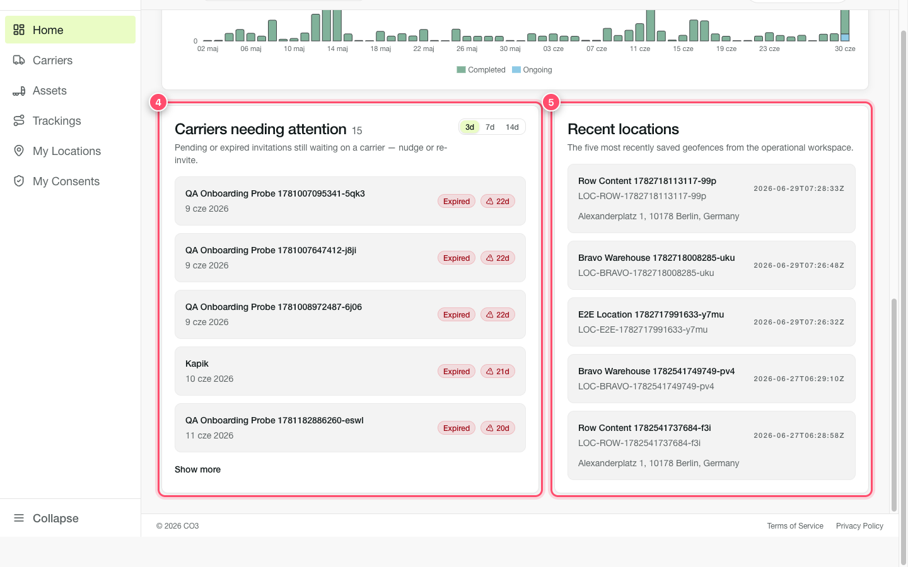
- 4Carriers needing attention — invitations that are still pending or have expired. Use the 3d / 7d / 14d buttons to filter by how long they've waited, then Show more to open the full list.
- 5Recent locations — the five geofences you saved most recently, for quick reference.
Every tile and card on Home is a shortcut. Clicking a count or a Show more link takes you to the matching list, already filtered.
Carriers
The Carriers page is your partner directory. It lists every carrier you've invited or connected with, their status, and exactly what each has consented to share.
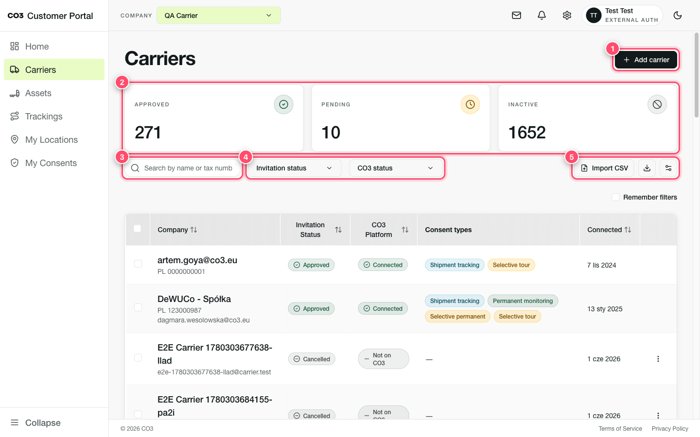
- 1Add carrier — opens the invitation form. Walkthrough below →
- 2Status summary — how many partners are Approved, Pending or Inactive.
- 3Search — find a carrier by company name or tax number.
- 4Filters — narrow by Invitation status and CO3 platform status.
- 5Toolbar — Import a CSV of carriers, Export the list, or Configure which columns are visible.
Reading the table
Each row is one carrier. The columns tell you everything you need at a glance:
| Column | What it means |
|---|---|
| Company | The carrier's name, tax number and the contact email the invitation was sent to. |
| Invitation Status | Where the invitation stands — see the status guide below. |
| CO3 Platform | Whether that company is already Connected on CO3, Invited, or Not on CO3 yet. |
| Consent types | The kinds of visibility the carrier has granted (e.g. Shipment tracking, Selective tour, Permanent monitoring). |
| Connected | The date the relationship was established. |
Invitation statuses
You can filter the list by status using the Invitation status button. The available states are:
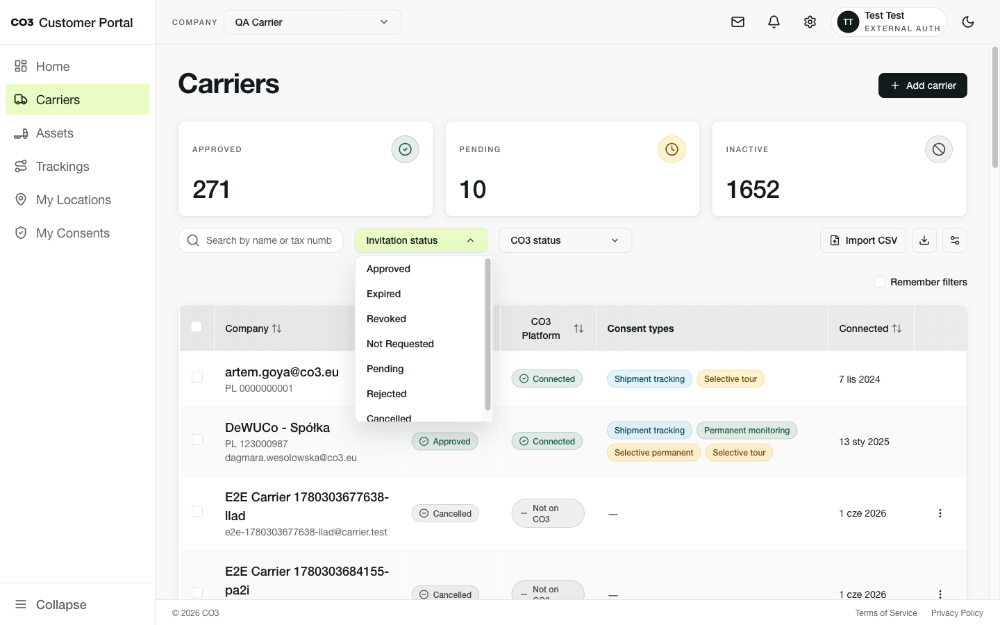
| Status | Meaning |
|---|---|
| Approved | The carrier accepted and the relationship is live. |
| Pending | Invitation sent; waiting for the carrier to respond. |
| Not Requested | The carrier exists in your list but no invitation has been sent yet. |
| Expired | The invitation lapsed before it was accepted — re-invite to try again. |
| Rejected | The carrier declined the invitation. |
| Revoked | A previously granted access was withdrawn. |
| Cancelled | You cancelled the invitation. |
These are the same options you'll find behind the Invitation status filter shown above, so the picture and the table read the same way.
Tick Remember filters (just under the toolbar) and the portal will keep your search and filters next time you return to the page.
Inviting a carrier
Inviting a carrier sends them an email asking to connect on CO3. You only need a company name and an email address — everything else is optional.
- Open the form. On the Carriers page, select Add carrier (top-right).
- Fill in the essentials. Enter the Carrier name and a contact Email. These two fields are required.
- Add optional details (optional). Expand Show optional fields to record a contact name, phone number (with country code) and a company identifier such as a VAT number.
- Pick an invitation template. Choose which email template the carrier will receive. Your company default is selected automatically — the line beneath shows which consent the carrier will be asked to accept.
- Send it. Select Add carrier. The carrier appears in your list and receives the invitation email.
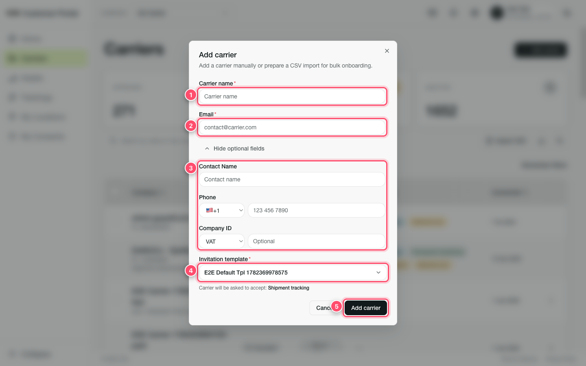
- 1Carrier name — required.
- 2Email — required; this is who receives the invitation.
- 3Optional details — contact name, phone (with country code) and company ID type (VAT, DUNS, EIN…).
- 4Invitation template — which email the carrier gets, and the consent it asks for.
- 5Add carrier — sends the invitation and closes the dialog.
Already invited? If a carrier with the same email already has a pending invitation, the form will tell you inline and keep your entries, so nothing is sent twice.
Onboarding many partners at once? Use Import CSV in the toolbar to prepare a bulk invitation instead of adding carriers one by one.
What your carrier sees
It helps to know the experience on the other side. Your invitation email leads the carrier to a dedicated registration site, branded with your colours and logo, where they connect to CO3.
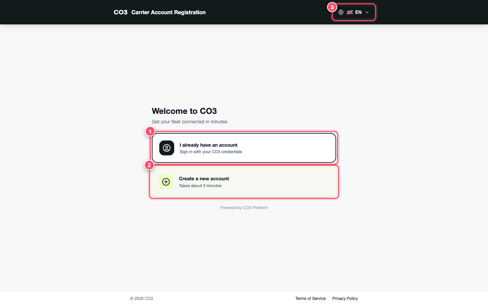
- 1I already have an account — existing CO3 companies sign in and simply accept the connection.
- 2Create a new account — new companies register in about three minutes.
- 3Language — the carrier can switch the page language to suit them.
New companies follow a short, four-step wizard — Company, Consents, Telematics and Assets — that sets up their profile and the connection to you.
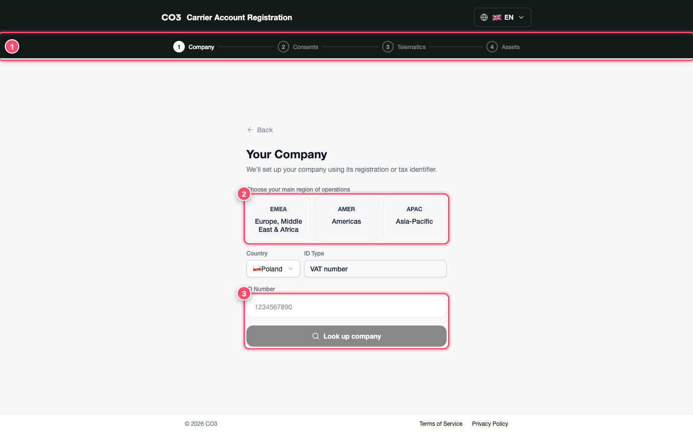
- 1Progress steps — the carrier always sees where they are: Company → Consents → Telematics → Assets.
- 2Region of operations — EMEA, Americas or Asia-Pacific.
- 3Company lookup — they enter a tax/registration ID so CO3 can pre-fill their details.
Once the carrier accepts the consent, the invitation in your Carriers list flips to Approved and the consent appears under Received on your My Consents page.
Sending invitations & tracking delivery
Once a carrier is on your list you can (re-)send their invitation email and follow exactly what happened to it — when it was sent, to whom, and whether it succeeded.
Each carrier row has a ⋮ (row actions) button on the right. For invitations that are still open, it offers two actions.
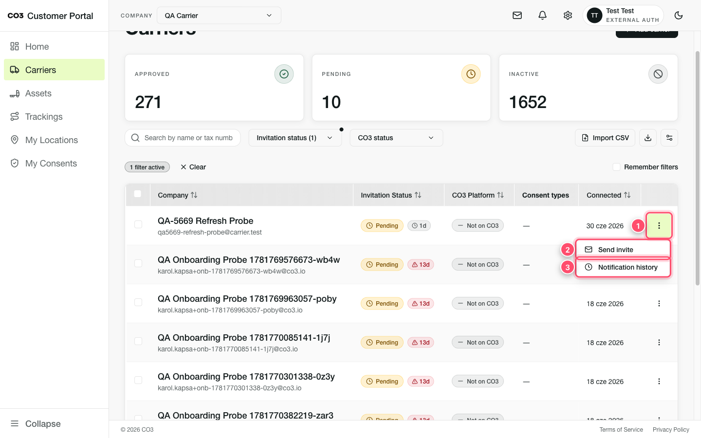
- 1Open row actions (⋮) — the menu trigger at the end of each row.
- 2Send invite — (re)sends the invitation email to that carrier. A small toast confirms it was sent.
- 3Notification history — opens the full delivery log for that invitation.
The activity log
Choosing Notification history opens a timeline of every event for that invitation, newest first — when it was created, each time it was sent, and the recipient address. If a send ever fails, the entry expands to show why, so you can fix it and try again.
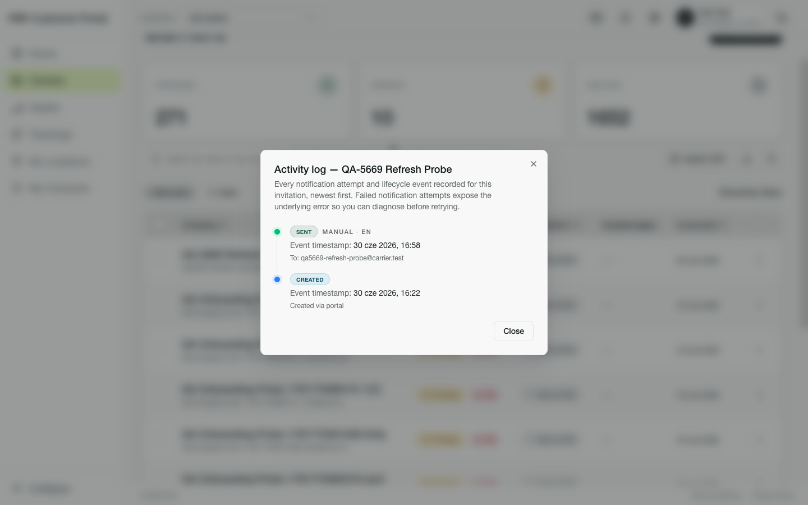
The activity log merges send attempts (SENT / FAILED) with lifecycle events such as CREATED, so you always know the full story.
The Send invite action only appears while an invitation is still open (Pending or not yet requested). Once a carrier has accepted or declined, there's nothing left to send.
Assets
Assets are the connected vehicles your partners share with you. The list shows every truck, trailer or van you currently have visibility into, and each one opens a rich detail view with live location and telemetry.
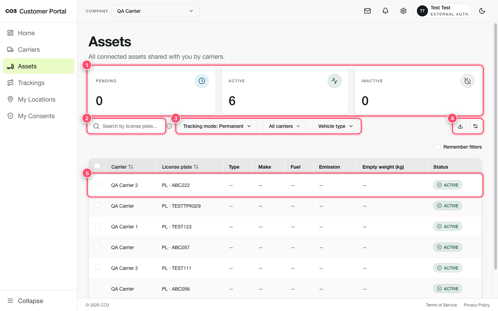
- 1Status tiles — Pending, Active and Inactive vehicle counts.
- 2Search — find a vehicle by its licence plate.
- 3Filters — by tracking mode, by carrier, and by vehicle type.
- 4Export & columns — download the list as CSV or choose visible columns.
- 5Open a vehicle — click any row to see its full detail.
Inside a vehicle
Opening a vehicle gives you a summary header (carrier, VIN, licence plate, status) and a set of tabs. You'll see the ones that apply to that vehicle — up to five.
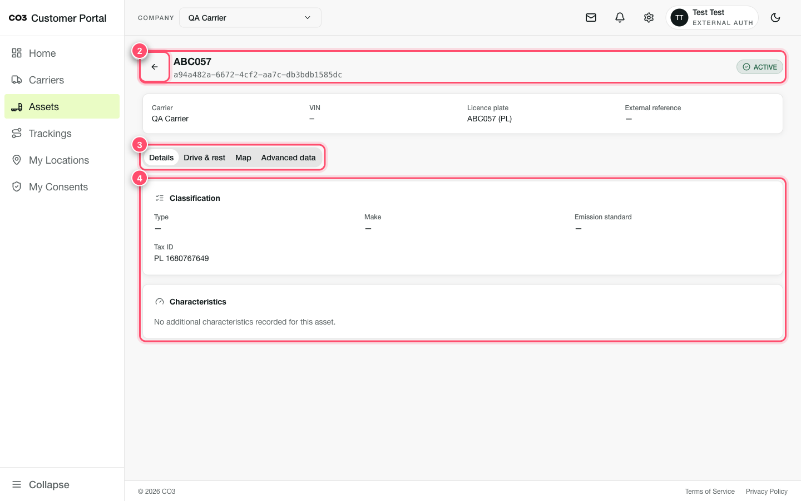
- 1Go back — return to the list.
- 2Summary — carrier, VIN, licence plate and external reference (the live-status pill sits by the title).
- 3Tabs — Details, Drive & rest, Map, Advanced data and Availability. You'll see the ones relevant to this vehicle.
- 4Tab content — the selected tab's information.
Details
Classification and characteristics — vehicle type, make, emission standard and tax ID.
Drive & rest
Driving-time status from the tachograph — “next drive” and “daily drive” gauges so you know how long a vehicle can keep moving.
Map
The vehicle's recent track on a map, with a 24h / 3d / 7d window and a playback slider to replay the journey.
Advanced data
Telemetry over time — movement, speed, fuel level, mileage, temperature zones and ignition.
Availability
Who shares this vehicle with you and on what basis — owner vs. leased grant, and the consent type behind it. Appears when sharing details are available.
Map & route
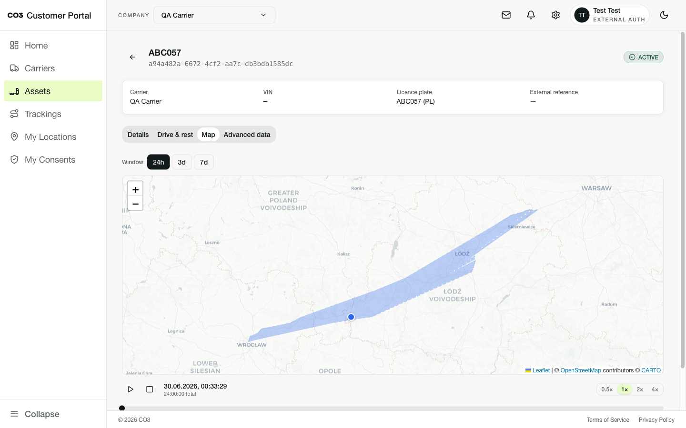
Pick a time window (24h / 3d / 7d), then press play to replay the vehicle's movement at 1×–4× speed.
Advanced telemetry
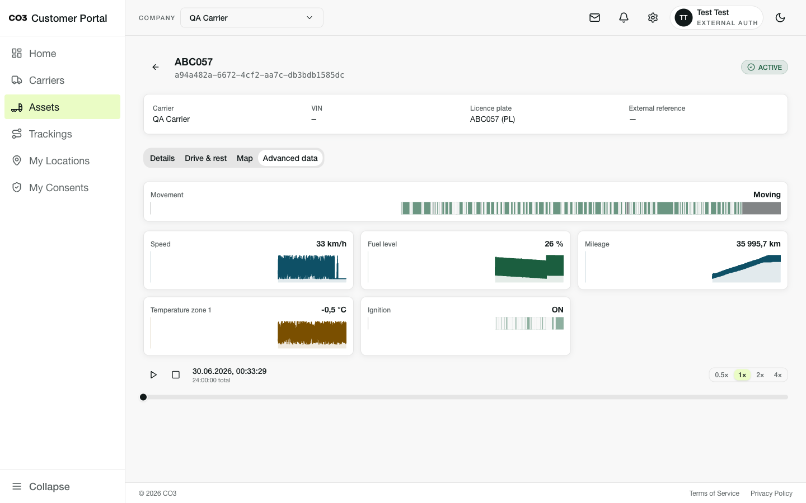
Drive & rest
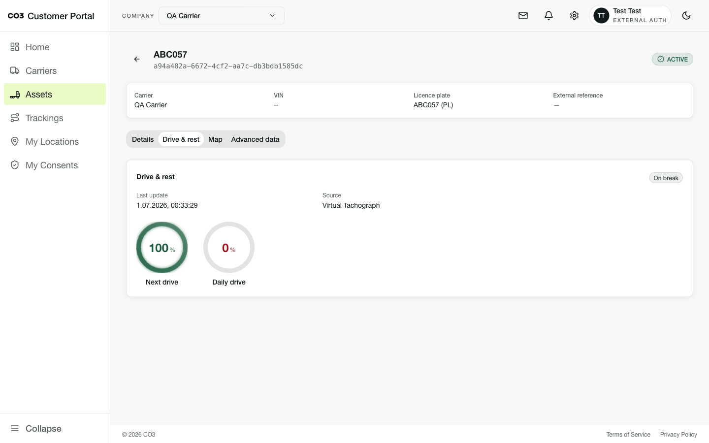
Tachograph-derived gauges help you plan around legal driving and rest limits. Next drive is how long the vehicle can legally keep driving now; Daily drive is how much of today's permitted driving time is left.
Exporting & reporting
From the Assets list you can Export to CSV (in the toolbar) to take the current, filtered list into a spreadsheet. Inside a vehicle, the Map and Advanced data tabs let you replay position and telemetry over a chosen 24h / 3d / 7d window; depending on your plan, a downloadable telemetry report for a date range may also be available.
Which tabs and data points appear depends on what the vehicle's carrier has consented to share and what its hardware reports. A tab may be hidden if that data isn't available.
Trackings
Trackings are your transport orders — the actual shipments moving between locations. Browse incoming and outgoing orders, then open one to follow its route, stops and emissions.
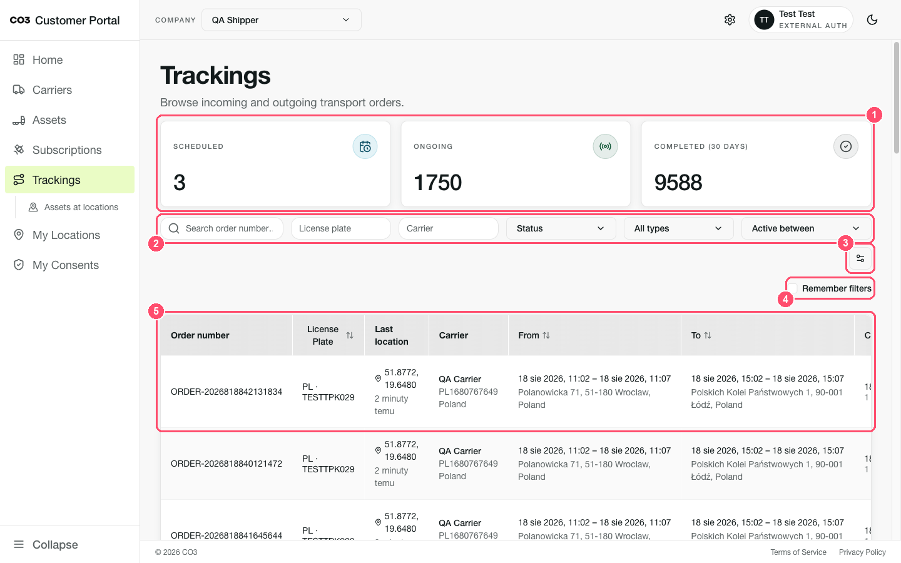
- 1Search — by order number, licence plate or carrier.
- 2Filters — by status, transport type, and an “active between” date range.
- 3Open an order — click any row to open the tracking detail.
Each row shows the order number, licence plate, last known location, carrier, and the planned From → To stops with their time windows.
Following a shipment
Opening an order shows everything about that journey on one screen.
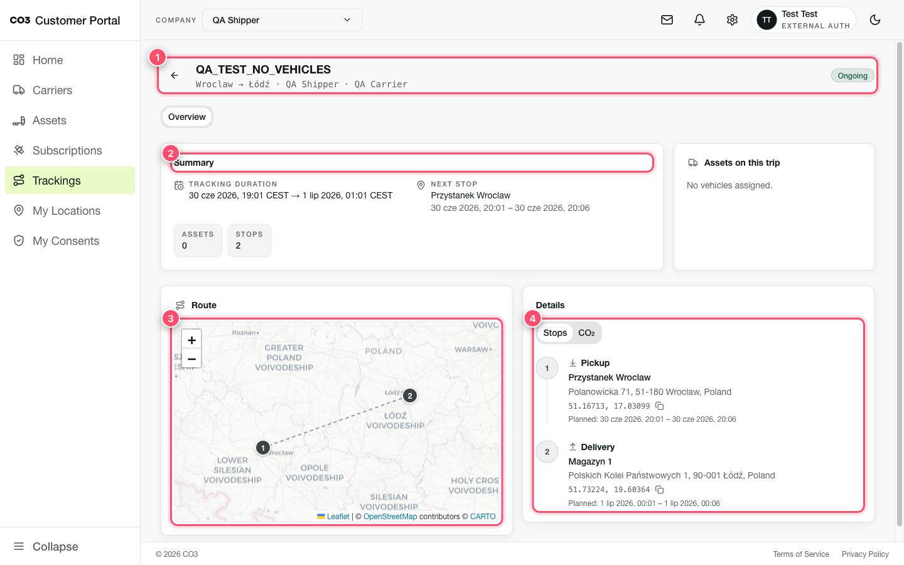
- 1Header — the route (origin → destination), the shipper and carrier, and the live status (e.g. Ongoing).
- 2Summary — tracking duration, next stop, and how many assets and stops are involved.
- 3Route map — the planned path with numbered stop markers.
- 4Details — switch between Stops (each pickup/delivery with address, coordinates and planned times) and CO₂ emissions.
In the Stops list, use the small copy icon next to any coordinates to copy them — handy for pasting into another map or a message.
What you can open here depends on your role and on the data available for an order. For example, the CO₂ tab and the live position only appear when emissions and tracking data are being shared — a missing tab is expected, not an error.
My Locations
Locations are reusable, geofenced points — your warehouses, depots, customer sites and so on. Once saved, they power features like arrival detection and proximity alerts across the platform.
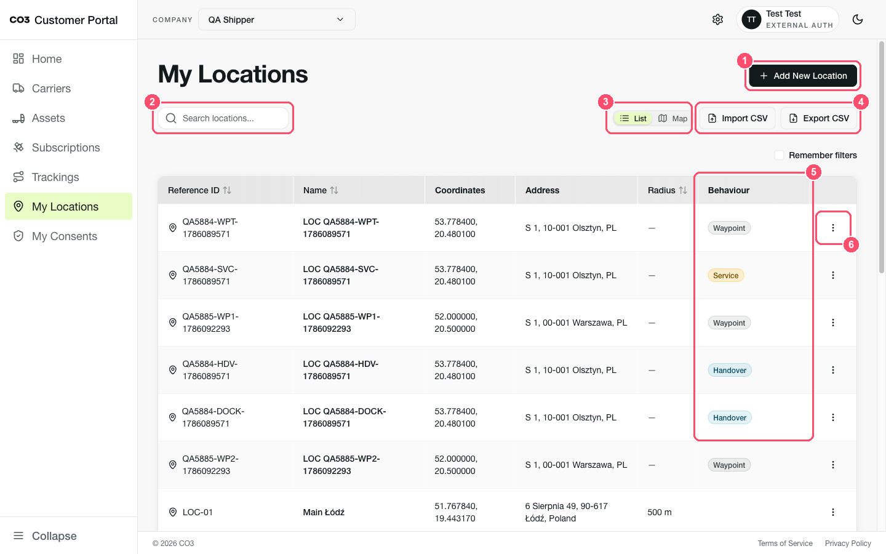
- 1Add New Location — opens the creation form.
- 2Search — filter by reference ID or name.
- 3List / Map toggle — view your points as a table or on a map.
- 4Import CSV — bulk-add many locations at once.
- 5Row actions — open the ⋮ menu on a row to Edit or Delete that location.
Adding or editing a location
- Open the form with Add New Location (or Edit location from a row's ⋮ menu).
- Identify it — give it a unique Reference ID and a friendly Name.
- Place it — enter the Latitude and Longitude. The preview map on the right updates live as you type.
- Add an address (optional) — street, postcode, city and country for human-readable context.
- Set the radii — the Geofence radius defines the location's boundary; the Asset-proximity radius defines when a vehicle counts as “at” the location.
- Save with Add Location (or Update Location).
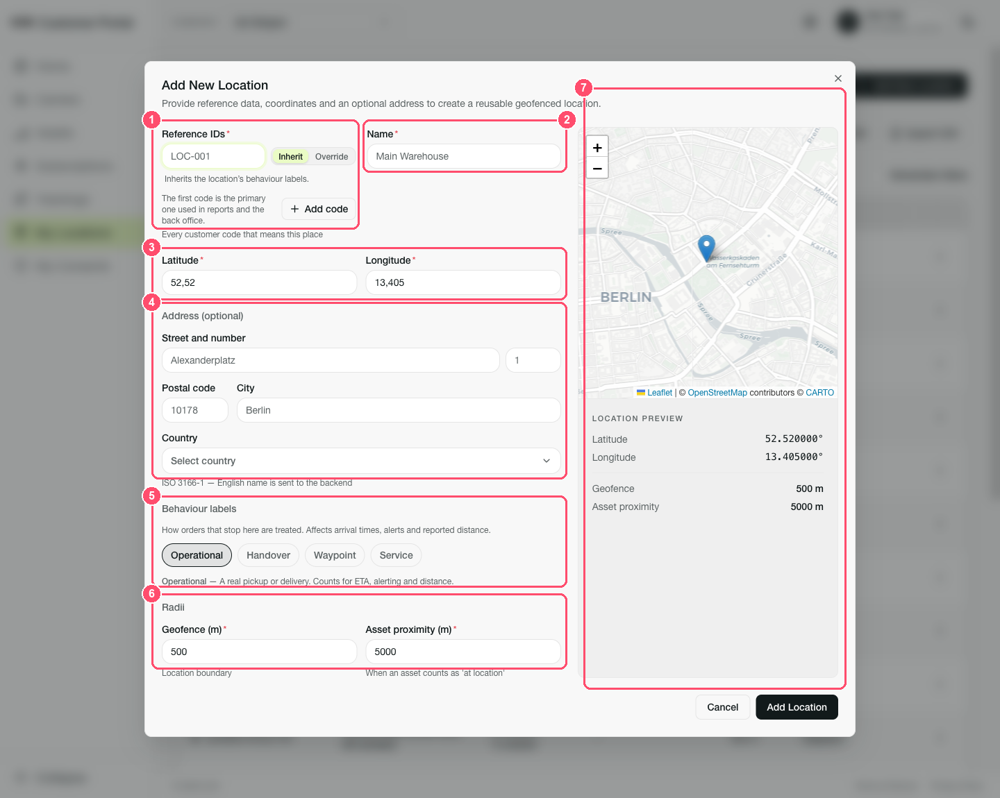
- 1Reference ID & Name — both required; the reference must be unique.
- 2Coordinates — latitude and longitude.
- 3Address — optional, with a searchable country picker.
- 4Radii — geofence and asset-proximity, in metres.
- 5Live preview — confirms the pin and circles before you save.
- 6Add Location — saves the point.
Map view
Switch to Map to see all your locations at once, clustered by area, with a synced list grouped by country on the side.
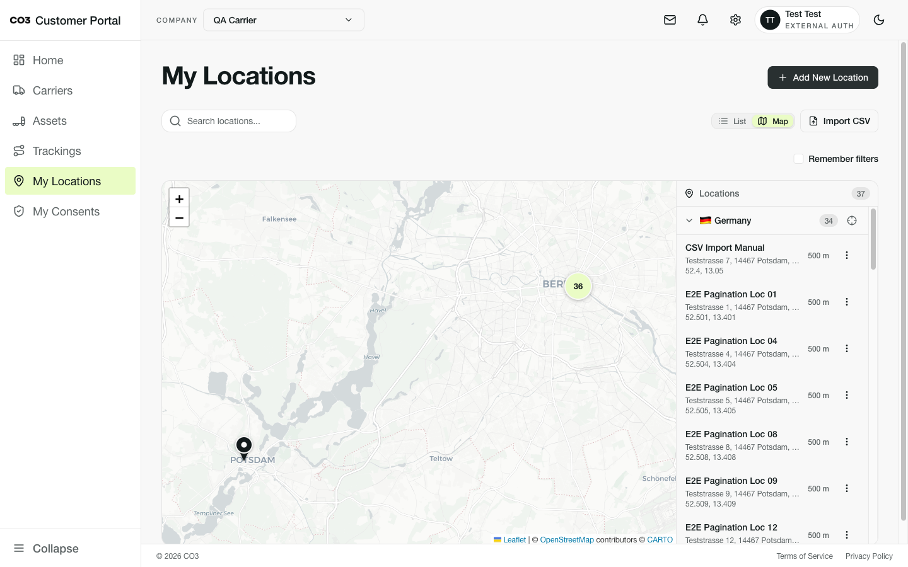
Deleting a location is permanent — it can't be undone. You'll be asked to confirm first. Reference IDs must be unique within your company, so reusing one will be rejected.
My Consents
Consents are the heart of trust on CO3. This page is your complete, auditable record of who has granted you visibility — and what you have granted to others.
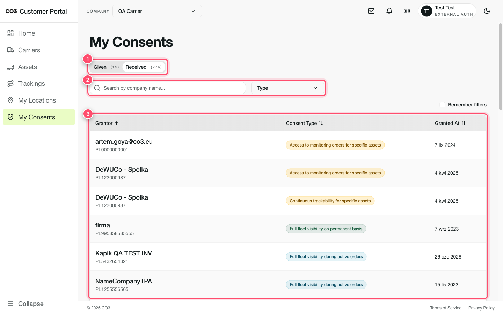
- 1Given / Received tabs — switch between consents you've given to others and ones you've received.
- 2Search & Type filter — find a partner by name, or narrow to specific consent types.
- 3The table — each row names the company, the consent type, and the date it was granted.
Consent types explained
| Consent | What it allows |
|---|---|
| Access to monitoring orders for specific assets | Visibility of selected vehicles, only for the duration of agreed orders. |
| Continuous trackability for specific assets | Ongoing visibility of specific vehicles, beyond a single order. |
| Full fleet visibility during active orders | See the whole fleet, but only while orders are active. |
| Full fleet visibility on permanent basis | Continuous visibility of the entire fleet. |
Two names for the same thing. Lists like Carriers and Email Templates show short consent labels in chips (for example Shipment tracking or Selective tour), while this page spells out the full descriptive name. They describe the same underlying permissions — just in a compact vs. a detailed form.
How consents are granted and changed
You don't create consents directly on this page — it's the record. Consents come into existence through the invitation flow: when you invite a carrier and they accept, they grant the consent named in your invitation template. From then on it appears in your Received tab, and the matching relationship shows as Approved on the Carriers page.
The invitation statuses you see on Carriers map directly to what happened to a consent request:
- Pending — you've asked; the partner hasn't decided yet.
- Approved — granted, and now listed here under Received.
- Rejected — the partner declined the request.
- Revoked — a previously granted access was later withdrawn. Revocation is recorded, so the history stays auditable.
- Expired / Cancelled — the request lapsed or was called off before acceptance — simply re-invite to ask again.
To ask for more visibility from an existing partner, send a fresh invitation with a template that requests the broader consent type.
Want to grow your network? The bottom of this page links straight to inviting a new company.
Subscriptions
Subscriptions let shippers turn on permanent monitoring for the vehicles that matter most, choosing exactly which data modules to receive — and keeping the billing for it all in one place.
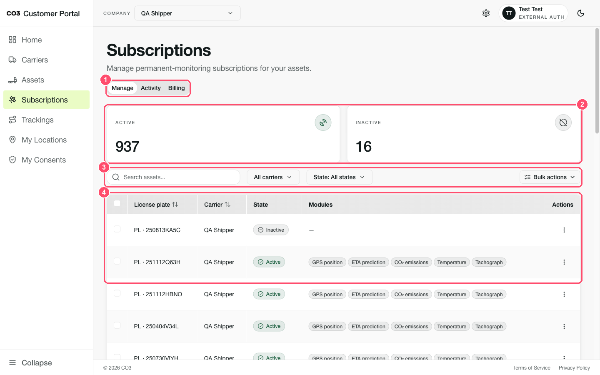
- 1Manage / Activity / Billing — manage active subscriptions, review what changed, and see your billing.
- 2Filters & bulk actions — narrow by carrier or state, and apply changes to several vehicles at once.
- 3Subscription rows — each vehicle with its state and the active data modules.
Data modules you can subscribe to
Subscriptions are a shipper feature. If you don't see Subscriptions in your sidebar, your account doesn't have a shipper role for the current company.
Invitation Branding
Branding controls how your carrier-invitation emails look — your logo and colour palette — so partners instantly recognise that the invitation came from you. Open it from the Settings ⚙ menu.
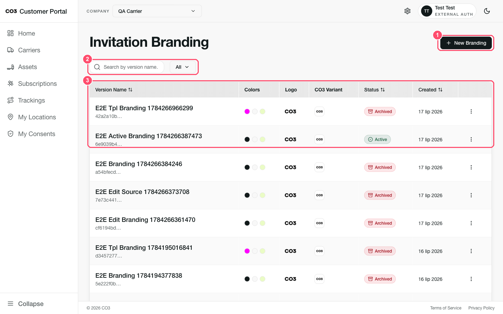
- 1New Branding — create a new visual identity.
- 2Search & status filter — find a version, or show only Active / Inactive / Archived ones.
- 3The table — each row shows the colour swatches, logo preview, CO3 logo variant, status and created date.
Brand statuses
| Status | Meaning |
|---|---|
| Active | The branding currently used in your invitation emails. Only one can be active at a time. |
| Inactive | A saved branding that isn't currently in use — you can edit, activate or archive it. |
| Archived | Retired and read-only, kept for your records. |
The live preview editor
Creating or editing a branding opens a two-pane editor: your settings on the left, a live email preview on the right that updates as you type. You set:
- Version name — a label so you can tell brandings apart.
- Logo URL — a link to your logo image.
- Colours — Primary (headings, buttons, body text), Background (the page behind the email) and Accent (highlights and links).
- CO3 logo variant — which version of the CO3 mark to pair with yours.
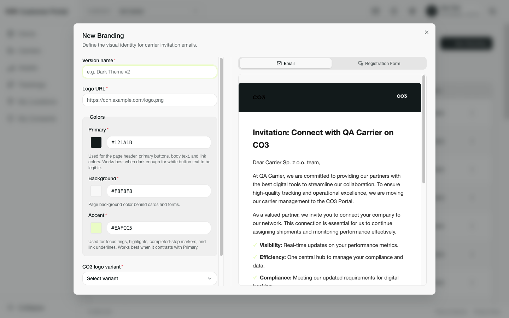
Switch the preview between the Email and Registration Form tabs to see your brand in both places carriers will encounter it.
The Active branding is locked because it's the one going out in your live invitation emails. To edit it, activate a different branding first — the old one becomes Inactive and editable.
Email Templates
Where Branding sets the look, Templates set the words. Templates are the multilingual email content carriers receive when you invite them — and you choose which one to use each time you add a carrier. Open it from the Settings ⚙ menu.
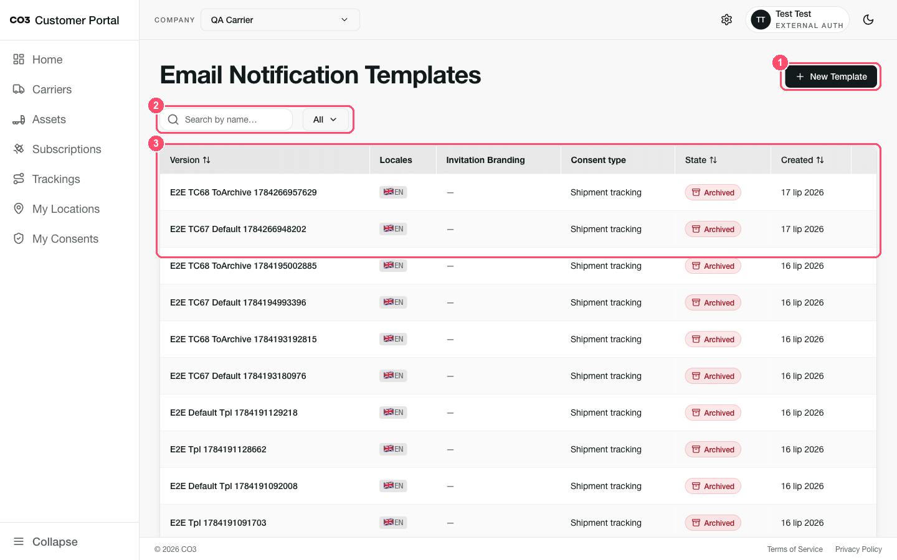
- 1New Template — create a new email template.
- 2Search & filter — find by name or filter by state.
- 3The table — version name, language locales, linked branding, consent type, and state (Default / Archived).
Writing a template
The editor mirrors the branding one: a form on the left, a live email preview on the right. You can:
- Name the template and pick the consent type the carrier will be asked to accept.
- Link a branding scheme so the preview (and the real email) uses your colours and logo.
- Mark it as your company's default, so it's pre-selected whenever you add a carrier.
- Add one or more language locales (e.g. EN, DE, PL) and write the greeting and paragraphs for each. Placeholders like
{{invitedCompanyName}}are filled in automatically per recipient.
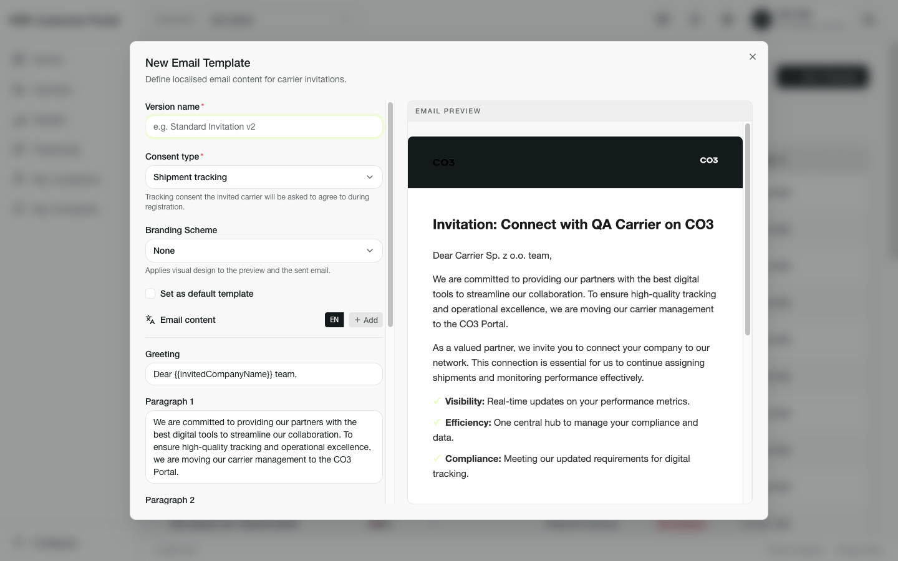
Add multiple locales to a single template and CO3 uses the version matching the carrier's language where available (falling back to your default) — no need to maintain separate templates per country.
Tips & shortcuts
A handful of habits that make the portal faster to use every day.
Handy habits
Remember filters
Tick this on any list and your search and filters are restored next visit.
Configure columns
Use the columns button to hide data you don't need and focus the table.
Export to CSV
Most lists can export — great for reports or sharing with colleagues.
Pick your theme
Switch between light and dark whenever your environment changes.
| Where | Shortcut / habit |
|---|---|
| This handbook | Press ⌘K / Ctrl K (or /) to search. |
| Any list | Sort by clicking a column header (where the sort arrows appear). |
| Country / option pickers | Start typing to filter long lists instead of scrolling. |
| Sidebar | On desktop, Collapse widens your workspace; on phones the sidebar tucks behind the ☰ menu button. |
Frequently asked questions
Why can't I see Subscriptions (or some other item) in my sidebar?
The sidebar adapts to your role and company. Some features — such as Subscriptions — are only available to shippers. Switch to the right company in the top-left, or ask your administrator if you believe you should have access.
A carrier says they didn't get my invitation. What can I do?
Open the carrier's Notification history from its row ⋮ menu to confirm the email was sent and to which address. If the address was wrong, you can add the carrier again with the correct one. You can also use Send invite to resend.
Why is a vehicle missing a tab, like Map or Drive & rest?
The data shown for each vehicle depends on what its carrier consented to share and what the vehicle's hardware reports. If that data isn't available, the relevant tab or value simply won't appear.
I can't edit my Active branding. Is that a bug?
No — it's intentional. The Active branding is the one being used in live invitation emails, so it's locked. Activate a different branding first, then the previous one becomes Inactive and editable.
What's the difference between Branding and Email Templates?
Branding is the look (logo, colours). Templates are the words (greeting, paragraphs, language). A template can link to a branding so the email is both well-written and on-brand.
Is my data shared automatically with anyone?
No. Visibility only exists where an explicit consent has been granted. The My Consents page is your complete record of every access given and received.
Glossary
The words you'll meet most often around the portal.
| Shipper | A company that sends goods and wants visibility of how they're transported. |
| Carrier | A company that transports goods and shares vehicle visibility with its partners. |
| Consent | An explicit, auditable permission to share specific visibility between two companies. |
| Asset | A connected vehicle — truck, trailer or van — visible to you because of a consent. |
| Tracking | A transport order: a shipment moving between stops, which you can follow on a map. |
| Geofence | A circular boundary around a saved location used to detect arrivals and proximity. |
| Tachograph | The device that records a driver's driving and rest times; powers the Drive & rest view. |
| Next / Daily drive | Drive & rest gauges — how long a vehicle can legally keep driving now, and how much of today's permitted driving time remains. |
| Telemetry | Live measurements from a vehicle — speed, fuel, temperature, mileage, ignition. |
| Invitation template | The reusable, multilingual email content sent when you invite a carrier. |
| Branding | The logo and colour palette applied to your invitation emails and registration page. |
| Subscription | Permanent monitoring of a vehicle with chosen data modules (a shipper feature). |